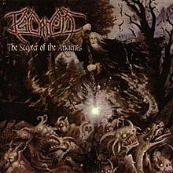
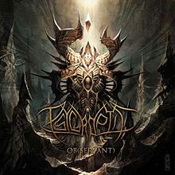

DISCOGRAPHY
- The Scepter of the Ancients

- Released: 2003
- Label: Unique Leader
- Track Listing:
- "The Colour of Sleep" - 5:06
- "Battling the Misery of Organon" - 4:00
- "Lacertine Forest" - 4:09
- "Psycrology" - 4:55
- "Skin Coffin" - 4:01
- "Cruelty Incarnate" - 5:26
- "The Valley of Winds Breath and Dragons Fire" - 4:58
- "A Planetary Discipline" - 3:55
- "The Scepter of Jaar-Gilon" - 6:31
- Symbols of Failure
- Released: 2006
- Label: Neurotic
- Track Listing:
- "Alpha Breed" - 3:50
- "Missionaries of a Future to Come" - 4:18
- "Merchants of Deceit" - 5:27
- "Minions: The Fallen" - 3:51
- "Repairing the Dimensional Cluster" - 3:42
- "Epoch of the Gods" - 4:44
- "Our Evolutionary Architecture" - 4:39
- "An Experiment in Transience" - 4:54
- "Cleansing a Misguided Path" - 4:24
- Ob (Servant)

-
Released: 2008
- Label: Nuclear Blast Records
- Track Listing:
- "Ob(Servant)" - 3:23
- "A Calculated Effort" - 6:30
- "Slaves of Nil" - 6:01
- "The Shifting Equilibrium" - 4:27
- "Removing the Common Bond" - 6:00
- "Horde in Devolution" - 5:21
- "Blood Stained Lineage" - 4:54
- "Immortal Army of One" - 5:11
- "Initiate" - 8:01